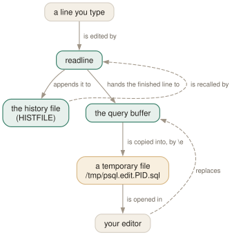

Day 07
Editing and history
Readline sits in front of the buffer, your editor sits behind it, and one file per database.
By the end of today you can
- keep a separate command history for every database you connect to
- fix a function in your editor and have the change applied on save
- say why setting HISTFILE at the prompt does nothing
The line editor is not psql
Everything about editing a line, recalling an old one and completing a name is readline's work, not psql's. That is worth knowing for two practical reasons: your readline configuration applies here, and one flag — -n — removes completion, history and multi-line editing together, because they are all the same library.
So the ordinary keys work: C-a and C-e for the ends of the line, C-w and C-u to kill backwards, C-p and up-arrow through the history. The one people do not know they have is C-r: reverse incremental search, three characters of a query you ran last Tuesday, and there it is.
Completion is more interesting than it looks. Keywords complete from a built-in list, but object names complete by querying the server, which means a Tab has side effects on your connection:
Turning completion off is a readline matter, and readline can scope a setting to one application:
# ~/.inputrc
$if psql
set disable-completion on
$endif

~/.inputrc rather than by psql, and why -n removes all three at once. Your editor owns the buffer once \e has copied it into the amber box, and the round trip through a real file is why quitting the editor unchanged behaves differently for a file than for the buffer.Your editor, on both sides of the buffer
\e copies the query buffer to a temporary file, runs your editor on it, and re-parses whatever comes back. psql looks at PSQL_EDITOR, then EDITOR, then VISUAL, and falls back to vi.
The re-parsing has a consequence people meet by accident. The returned text is treated as a single line, so:
- If it contains or ends with a semicolon, everything up to that semicolon is executed at once — you do not get a chance to look at it.
- Whatever remains is redisplayed and waits for a
;or a\g, or a\rto abandon it. - Because the whole buffer counts as one line, a meta-command in it swallows everything after it as its arguments. So you cannot write meta-command scripts this way — that is what
\iis for, on Day 11.
And one asymmetry worth committing to memory. Quit the editor without saving and: if you were editing the buffer, it survives; if you were editing a file or the previous query, the buffer is cleared.
testdb=# \e somefile.sql -- quit without changing anything
testdb=# \p
Query buffer is empty.
The other two are the ones that change how you work on a schema. \ef name fetches a function as a CREATE OR REPLACE FUNCTION statement, and \ev name does the same for a view; save and exit and the new definition is applied. With no argument, \ef gives you a blank template. Both take a line number, and it counts from the first line of the body — the same numbering the server uses when it reports an error inside a function.
One history per database
The history is saved on exit and reloaded on start-up, and by default it all goes into one file, ~/.psql_history, regardless of which database you were in. That means up-arrow in your reporting database offers you the migration you ran against production. The fix is the manual page's own example, and it works because a startup file runs after connecting, so :DBNAME already has a value:
\set HISTFILE ~/.psql_history-:DBNAME
Two more worth setting. HISTSIZE defaults to 500, which is about a fortnight of real use; a negative value means no limit. And HISTCONTROL borrows bash's vocabulary wholesale — the manual page cheerfully says this feature “was shamelessly plagiarized from Bash”:
ignoredups- do not store a line identical to the previous one
ignorespace- do not store a line that begins with a space — the deliberate way to keep something out
ignoreboth- both of the above
none- the default: store everything typed interactively
\s prints the history, and \s file writes it out — the quickest way to turn “what did I actually run this afternoon” into a script you can edit. It is unavailable if psql was built without readline.
Two settings for the way you type
COMP_KEYWORD_CASE decides the case of completed keywords. The default, preserve-upper, means the completion follows whatever you already typed, and defaults to upper case when you have typed nothing:
testdb=# ins<Tab> -> insert into
testdb=# INS<Tab> -> INSERT INTO
Set it to lower or upper to force one regardless. If you write SQL in lower case and dislike being handed shouted keywords, \set COMP_KEYWORD_CASE lower is the line you want.
And IGNOREEOF, also borrowed from bash: how many consecutive C-d it takes to end an interactive session. The default is 0, meaning one is enough. Set it to 2 or 3 if you keep exiting psql by accident — and note that psql swallows the ignored ones silently, with none of bash's “use exit to leave the shell”.
Today's habit
Two lines into your psqlrc, and then use C-r instead of holding down the up-arrow. Per-database history is one of those changes you do not notice until you sit at a machine without it.
Tomorrow: what happens when a statement fails, which is where psql's defaults are least like what you would guess.
New vocabulary
Keys
| Key | Does |
|---|---|
| Tab | Complete a keyword or an object name. Twice for a menu, depending on the library. |
| UpC-p | The previous line from the history. |
| C-r | Reverse incremental search through the history. The one worth learning today. |
Commands
| Command | Does |
|---|---|
\e | Edit the buffer — or a file, or the last query — optionally at a line number. |
\ef name | Fetch a function's definition into your editor. \ev for a view. |
\s file | Print the command history, or write it to a file. |
Options
| Option | Does |
|---|---|
HISTFILE | Where history is kept. Default ~/.psql_history. Must be set in psqlrc. |
HISTSIZE | How many commands to keep. Default 500; a negative value means no limit. |
HISTCONTROL | ignorespace / ignoredups / ignoreboth / none (default). |
COMP_KEYWORD_CASE | Casing for completed keywords. Default preserve-upper. |
PSQL_EDITOR EDITOR VISUAL | Checked in that order. vi if none of them is set. |
PSQL_EDITOR_LINENUMBER_ARG | How a line number is passed. Default +, which suits vi and emacs. |
Today's configappend to ~/.psqlrc
One history per database. Without this, up-arrow in the reporting database offers you the migration you ran against production, which is a bad way to find out how tired you are. The :DBNAME interpolation only works here, in a startup file — setting HISTFILE at the prompt is silently ignored.
\set HISTFILE ~/.psql_history-:DBNAME
500 lines of history is about a fortnight. Keep more, and stop storing the same SELECT forty times over.
\set HISTSIZE 5000
\set HISTCONTROL ignoredups
psql reads this once at start-up, after connecting. Re-read it in place with \i ~/.psqlrc.
Drillsdo these in a real terminal, today
Self-check
Answer out loud first, then unfold.
You put \set HISTFILE ~/.psql_history-:DBNAME in your psqlrc and it works. You type the same line at the prompt and nothing happens — no error, no new file. Why?
The history file is chosen when the interactive session is set up, before you have a prompt to type at. By the time you set the variable, psql has already decided where the history will be written, and it will write it to ~/.psql_history when you quit. There is no warning because nothing is wrong — you set a variable, and it will be honoured by your next session.
There is a second trap in the same corner. -v HISTFILE=~/hist-:DBNAME does not work either, because -v assignments are not interpolated: you get a file named literally hist-:DBNAME. The :DBNAME trick belongs in a startup file, which is exactly where the manual page puts it.
Tab completion has just made SET TRANSACTION ISOLATION LEVEL fail immediately after a BEGIN. How is that possible?
Because completing an object name means sending a query to the server, and that query counts as the first statement of your transaction. SET TRANSACTION ISOLATION LEVEL must be the first statement in a transaction block, so a stray Tab between the BEGIN and it is enough to lose the race.
The manual page raises exactly this example. It is also the reason -E (Day 17) is so illuminating: a lot more crosses your connection than the statements you typed.
You want to turn tab completion off permanently. Which file, and why is it not a psql setting?
It is a readline setting, not a psql one, so it goes in ~/.inputrc — and readline lets you scope it to this application:
$if psql
set disable-completion on
$endif
For one run, -n (--no-readline) switches readline off altogether: no completion, no history recording, no multi-line editing. Its real use is pasting text that contains literal tab characters, which readline would otherwise try to complete.
A colleague's \ef myfunc 12 opens the editor at line 1 instead of line 12. What is unset?
PSQL_EDITOR_LINENUMBER_ARG, or rather it is set to something their editor does not understand. psql invokes the editor as $EDITOR <arg><n> <tempfile>, and the default + gives vi +12 /tmp/psql.edit.1234.sql — right for vi, emacs and most others.
Editors wanting a separate word need the trailing space included in the value: PSQL_EDITOR_LINENUMBER_ARG='--line '. And the line number counts from the first line of the function body, which is what the server means when it reports an error at line 12.
Cheat sheet
Readline in front, your editor behind. Neither is configured by psql.
C-r -- reverse history search. The one to learn today.
Tab -- complete. Object names query the SERVER: a Tab has side effects.
-n -- no readline at all: no completion, no history, no multi-line edit
~/.inputrc: $if psql / set disable-completion on / $endif
\e [file] [line] \ef func [line] \ev view [line] \s [file]
quit unchanged: editing the BUFFER keeps it; editing a FILE clears it
line numbers count from the first line of the function BODY
$PSQL_EDITOR > $EDITOR > $VISUAL > vi PSQL_EDITOR_LINENUMBER_ARG default '+'
\set HISTFILE ~/.psql_history-:DBNAME -- psqlrc ONLY; ignored at the prompt
\set HISTSIZE 5000 \set HISTCONTROL ignoredups|ignorespace|ignoreboth|none
\set COMP_KEYWORD_CASE lower \set IGNOREEOF 2 -- C-d twice to leave
Everything through Day 07
Keys
| Key | Does |
|---|---|
| C-c | Abandon the line you are typing and empty the query buffer. |
| C-d | End the session — but only when the buffer is empty. |
| Tab | Complete a keyword or an object name. Twice for a menu, depending on the library. |
| UpC-p | The previous line from the history. |
| C-r | Reverse incremental search through the history. The one worth learning today. |
Commands
| Command | Does |
|---|---|
psql | Connect with the defaults and start an interactive session. |
; | Dispatch the buffer. Not a meta-command — SQL's own statement terminator. |
\g | Dispatch the buffer, exactly as a semicolon does. |
\p | Print the buffer without sending it. \print in full. |
\r | Reset: throw the buffer away. \reset in full. |
\e | Edit the buffer in $EDITOR; on exit it is re-parsed and run. |
\w file | Write the buffer to a file instead of sending it. |
\; | Append a semicolon to the buffer without dispatching it. |
\? | Every meta-command, in twelve groups. 121 of them in 18.6. |
\h SELECT | Syntax for one SQL command. \h alone lists what it knows. |
\q | Quit. |
\c dbname | Reconnect to another database, reusing host, port and user. |
\c - user | Reconnect as another user. A dash means “leave that one as it is”. |
\c -reuse-previous=on ... | Merge a conninfo string onto the current parameters. |
\conninfo | A twelve-row table describing the live connection. |
\password | Change a password without it reaching your history or the server log. |
\encoding | Show the client encoding, or set it. |
\d | Bare: tables, views, materialized views, sequences and foreign tables. |
\d my_table | Describe one relation: columns, types, nullability, defaults, indexes, constraints. |
\d+ my_table | Adds storage, compression, stats target and per-column comments. |
\dt | Tables. The letters combine — \dti lists tables and indexes. |
\di \dv \dm \ds \dE | Indexes, views, materialized views, sequences, foreign tables. |
\dn | Schemas. \dn+ adds permissions and comments. |
\l | Databases, with owner, encoding, locale provider and privileges. |
\dP | Partitioned tables and indexes; add n to include non-root ones. |
\dx | Installed extensions; \dx+ lists everything each one owns. |
\df pattern | Functions, with result type, argument types and kind. |
\df pattern t1 t2 | Extra arguments are type patterns, matched positionally. |
\sf name | The function's source as CREATE OR REPLACE. \sf+ numbers the body. |
\sv name | The same for a view. \ev and \ef edit rather than show. |
\du | Roles and their attributes. \dg is the same command. |
\drg | Role grants: who is a member of what, with ADMIN/INHERIT/SET. |
\dp | Access privileges on tables, views and sequences. \z is the same command. |
\ddp | Default privileges — what future objects will be created with. |
\dconfig | Server parameters set to non-default values. \dconfig * for all of them. |
\drds | Settings attached to a role, a database, or the pair. |
\dT \do \da | Types, operators and aggregates — same grammar, rarer questions. |
\pset | With no argument, print all 22 printing options and their current values. |
\x | Toggle expanded mode. \x auto is the setting worth keeping. |
\a \t \f \C \H | Shortcuts kept for compatibility: format, tuples_only, fieldsep, title, HTML. |
\set | With no argument, list every variable currently set, with its value. |
\set NAME value | Set a psql variable. Several values are concatenated. |
\unset NAME | Delete it — or, for a control variable, restore its default. |
\echo :NAME | Read a variable back. The cheapest debugging tool psql has. |
\i ~/.psqlrc | Re-read the startup file without restarting. Tilde expansion works. |
\e | Edit the buffer — or a file, or the last query — optionally at a line number. |
\ef name | Fetch a function's definition into your editor. \ev for a view. |
\s file | Print the command history, or write it to a file. |
Options
| Option | Does |
|---|---|
-h -p -U -d | Host, port, user, database. -d also takes a whole conninfo string. |
-w -W | Never prompt for a password / always prompt. Both persist across \c. |
-l | List databases and exit. Connects to postgres unless told otherwise. |
PGHOST PGPORT PGUSER PGDATABASE | libpq's defaults for the four parameters. |
PGPASSFILE | The password file. Default ~/.pgpass, and it must be mode 0600. |
PGSERVICEFILE | Named connection recipes. Default ~/.pg_service.conf. |
S | Include system objects: \dtS. Supplying any pattern does this too. |
+ | More columns — and a size lookup per relation, so it is not free. |
x | Expanded output for this listing only. Goes after S or +, never straight after \d. |
a n p t w | Function-kind filters for \df: aggregate, normal, procedure, trigger, window. |
format | aligned (default), wrapped, unaligned, csv, html, asciidoc, latex, troff-ms. |
expanded | on / off (default) / auto — vertical records, always or only when too wide. |
null | What to print for NULL. Default is nothing, which reads exactly like an empty string. |
border | 0 none, 1 dividing lines (default), 2 a full frame. |
linestyle | ascii (default) or unicode. Aligned and wrapped only. |
footer | The (n rows) line. off removes it. |
columns | Target width for wrapped, and the threshold for expanded auto. 0 means use $COLUMNS. |
pager | off / on (default, meaning “only when it does not fit”) / always. |
xheader_width | full (default) / column / page / an integer — how long the record rule may be. |
-X | Skip both startup files. Every script should pass this. |
PSQLRC | Where the personal startup file lives. Overrides ~/.psqlrc. |
PGSYSCONFDIR | Where the system-wide psqlrc is looked for. |
QUIET | Suppress psql's informational chatter. The startup file's bookends. |
VERSION_NAME SERVER_VERSION_NUM | psql's version and the server's, as a string and a number. |
HISTFILE | Where history is kept. Default ~/.psql_history. Must be set in psqlrc. |
HISTSIZE | How many commands to keep. Default 500; a negative value means no limit. |
HISTCONTROL | ignorespace / ignoredups / ignoreboth / none (default). |
COMP_KEYWORD_CASE | Casing for completed keywords. Default preserve-upper. |
PSQL_EDITOR EDITOR VISUAL | Checked in that order. vi if none of them is set. |
PSQL_EDITOR_LINENUMBER_ARG | How a line number is passed. Default +, which suits vi and emacs. |